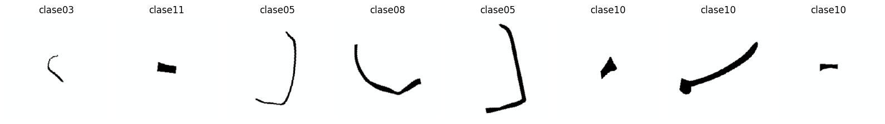
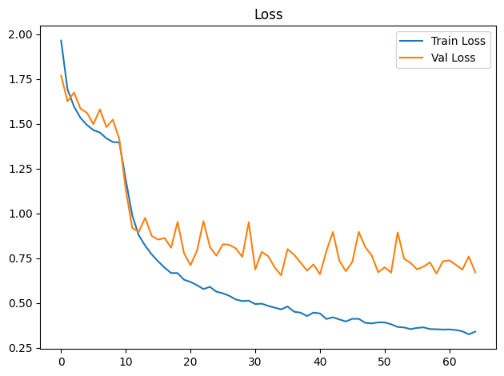
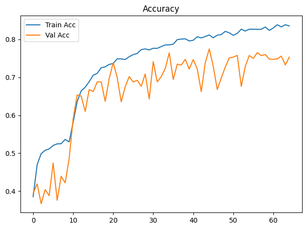
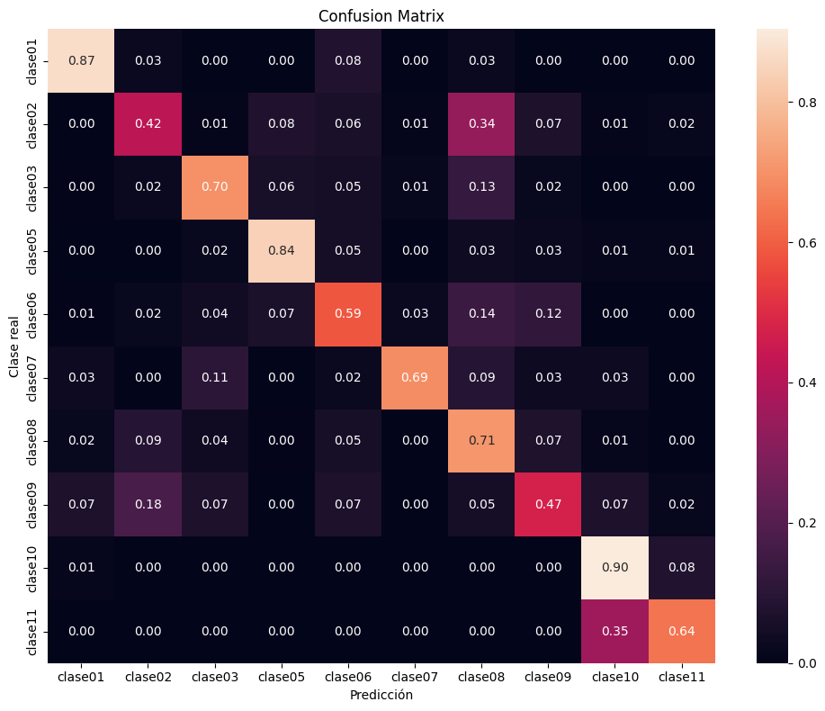

Dispositivo utilizado para procesamiento: CUDA - NVIDIA GeForce GTX 1650Entrenamiento de CNN ResNet-18 con Transfer Learning
Objetivos
- Construir un modelo baseline de clasificación mediante transfer learning con ResNet18 preentrenada.
- Entrenar inicialmente solo la capa clasificadora y descongelar
layer4enUNFREEZE_EPOCHcon una tasa de aprendizaje menor. - Aplicar transformaciones y aumentación de datos al conjunto de entrenamiento.
- Entrenar y validar el modelo registrando loss y accuracy por época.
- Detener el entrenamiento si val_loss no mejora suficientemente durante la paciencia configurada.
- Evaluar el modelo de la mejor época de validación sobre el conjunto de prueba.
- Analizar los resultados mediante accuracy, precision, recall, F1-score, reporte de clasificación y matriz de confusión normalizada.
- Guardar los pesos restaurados de la mejor época de validación (o los finales si se desactiva la parada anticipada).
Dispositivo para procesamiento
División de datos
La pertenencia de cada imagen a train, val o test se lee de la metadata generada por el notebook de división. La relación se realiza mediante ruta_relativa; por tanto, el split no se recalcula aunque cambien la semilla o los parámetros del entrenamiento.
Dataset seleccionado: unificado
Directorio de datos: /home/rafael/Dev/vasijas/data/12.unificado_divididos_en_train_val_y_test
Metadata de split: data/12.unificado_divididos_en_train_val_y_test/metadata.csv
Clases: clase01 clase02 clase03 clase05 clase06 clase07 clase08 clase09 clase10 clase11
Split persistido -> train: 14231, val: 3059, test: 3059
Conteo train por clase: [342, 608, 950, 741, 684, 646, 3724, 266, 4712, 1558]
Pesos de clase: [4.161, 2.341, 1.498, 1.921, 2.081, 2.203, 0.382, 5.35, 0.302, 0.913]Epoch 1/300
Train Loss: 1.9639 | Train Acc: 0.3855 | Val Loss: 1.7681 | Val Acc: 0.3942
Tiempo de epoch: 0:01:27.240000
Epoch 2/300
Train Loss: 1.6907 | Train Acc: 0.4696 | Val Loss: 1.6256 | Val Acc: 0.4191
Tiempo de epoch: 0:01:24.354470
Epoch 3/300
Train Loss: 1.5957 | Train Acc: 0.4987 | Val Loss: 1.6742 | Val Acc: 0.3671
Tiempo de epoch: 0:01:24.214123
Epoch 4/300
Train Loss: 1.5324 | Train Acc: 0.5076 | Val Loss: 1.5843 | Val Acc: 0.4041
Tiempo de epoch: 0:01:24.210426
Epoch 5/300
Train Loss: 1.4929 | Train Acc: 0.5113 | Val Loss: 1.5607 | Val Acc: 0.3880
Tiempo de epoch: 0:01:24.171907
Epoch 6/300
Train Loss: 1.4643 | Train Acc: 0.5205 | Val Loss: 1.4980 | Val Acc: 0.4740
Tiempo de epoch: 0:01:24.341734
Epoch 7/300
Train Loss: 1.4512 | Train Acc: 0.5246 | Val Loss: 1.5805 | Val Acc: 0.3759
Tiempo de epoch: 0:01:24.253228
Epoch 8/300
Train Loss: 1.4188 | Train Acc: 0.5249 | Val Loss: 1.4815 | Val Acc: 0.4394
Tiempo de epoch: 0:01:24.359295
Epoch 9/300
Train Loss: 1.3979 | Train Acc: 0.5363 | Val Loss: 1.5224 | Val Acc: 0.4220
Tiempo de epoch: 0:01:24.325327
Epoch 10/300
Train Loss: 1.3961 | Train Acc: 0.5298 | Val Loss: 1.4142 | Val Acc: 0.4861
Tiempo de epoch: 0:01:24.344517
Epoch 11: se descongela layer4 con lr=3.00e-05 (head lr=3.00e-04)
Epoch 11/300
Train Loss: 1.1871 | Train Acc: 0.5819 | Val Loss: 1.1310 | Val Acc: 0.5907
Tiempo de epoch: 0:01:57.813563
Epoch 12/300
Train Loss: 0.9889 | Train Acc: 0.6359 | Val Loss: 0.9187 | Val Acc: 0.6535
Tiempo de epoch: 0:01:56.075285
Epoch 13/300
Train Loss: 0.8783 | Train Acc: 0.6643 | Val Loss: 0.8980 | Val Acc: 0.6505
Tiempo de epoch: 0:01:56.194922
Epoch 14/300
Train Loss: 0.8197 | Train Acc: 0.6738 | Val Loss: 0.9755 | Val Acc: 0.6100
Tiempo de epoch: 0:01:56.120893
Epoch 15/300
Train Loss: 0.7716 | Train Acc: 0.6885 | Val Loss: 0.8748 | Val Acc: 0.6675
Tiempo de epoch: 0:01:56.293454
Epoch 16/300
Train Loss: 0.7325 | Train Acc: 0.7056 | Val Loss: 0.8540 | Val Acc: 0.6623
Tiempo de epoch: 0:01:56.190298
Epoch 17/300
Train Loss: 0.6975 | Train Acc: 0.7104 | Val Loss: 0.8629 | Val Acc: 0.6878
Tiempo de epoch: 0:01:56.242880
Epoch 18/300
Train Loss: 0.6676 | Train Acc: 0.7251 | Val Loss: 0.8087 | Val Acc: 0.6878
Tiempo de epoch: 0:01:56.260677
Epoch 19/300
Train Loss: 0.6674 | Train Acc: 0.7276 | Val Loss: 0.9529 | Val Acc: 0.6365
Tiempo de epoch: 0:01:56.272617
Epoch 20/300
Train Loss: 0.6301 | Train Acc: 0.7340 | Val Loss: 0.7780 | Val Acc: 0.6966
Tiempo de epoch: 0:01:56.237982
Epoch 21/300
Train Loss: 0.6183 | Train Acc: 0.7363 | Val Loss: 0.7111 | Val Acc: 0.7385
Tiempo de epoch: 0:01:56.266646
Epoch 22/300
Train Loss: 0.5997 | Train Acc: 0.7489 | Val Loss: 0.7918 | Val Acc: 0.6999
Tiempo de epoch: 0:01:56.063104
Epoch 23/300
Train Loss: 0.5783 | Train Acc: 0.7484 | Val Loss: 0.9571 | Val Acc: 0.6355
Tiempo de epoch: 0:01:56.178506
Epoch 24/300
Train Loss: 0.5906 | Train Acc: 0.7468 | Val Loss: 0.8125 | Val Acc: 0.6751
Tiempo de epoch: 0:01:56.117894
Epoch 25/300
Train Loss: 0.5636 | Train Acc: 0.7543 | Val Loss: 0.7646 | Val Acc: 0.7019
Tiempo de epoch: 0:01:56.184774
Epoch 26/300
Train Loss: 0.5545 | Train Acc: 0.7598 | Val Loss: 0.8284 | Val Acc: 0.6878
Tiempo de epoch: 0:01:56.097407
Epoch 27/300
Train Loss: 0.5404 | Train Acc: 0.7627 | Val Loss: 0.8251 | Val Acc: 0.6921
Tiempo de epoch: 0:01:56.161546
Epoch 28/300
Train Loss: 0.5203 | Train Acc: 0.7729 | Val Loss: 0.8049 | Val Acc: 0.6764
Tiempo de epoch: 0:01:56.181954
Epoch 29/300
Train Loss: 0.5114 | Train Acc: 0.7749 | Val Loss: 0.7582 | Val Acc: 0.7087
Tiempo de epoch: 0:01:56.092183
Epoch 30/300
Train Loss: 0.5136 | Train Acc: 0.7722 | Val Loss: 0.9512 | Val Acc: 0.6430
Tiempo de epoch: 0:01:56.177298
Epoch 31/300
Train Loss: 0.4945 | Train Acc: 0.7765 | Val Loss: 0.6873 | Val Acc: 0.7414
Tiempo de epoch: 0:01:56.800407
Epoch 32/300
Train Loss: 0.4970 | Train Acc: 0.7763 | Val Loss: 0.7853 | Val Acc: 0.6878
Tiempo de epoch: 0:01:56.290120
Epoch 33/300
Train Loss: 0.4843 | Train Acc: 0.7810 | Val Loss: 0.7618 | Val Acc: 0.7019
Tiempo de epoch: 0:01:56.448495
Epoch 34/300
Train Loss: 0.4746 | Train Acc: 0.7853 | Val Loss: 0.6993 | Val Acc: 0.7231
Tiempo de epoch: 0:01:56.268119
Epoch 35/300
Train Loss: 0.4647 | Train Acc: 0.7855 | Val Loss: 0.6552 | Val Acc: 0.7643
Tiempo de epoch: 0:01:56.158167
Epoch 36/300
Train Loss: 0.4810 | Train Acc: 0.7873 | Val Loss: 0.8006 | Val Acc: 0.6943
Tiempo de epoch: 0:01:56.152707
Epoch 37/300
Train Loss: 0.4520 | Train Acc: 0.7992 | Val Loss: 0.7697 | Val Acc: 0.7346
Tiempo de epoch: 0:01:56.250640
Epoch 38/300
Train Loss: 0.4464 | Train Acc: 0.8007 | Val Loss: 0.7266 | Val Acc: 0.7323
Tiempo de epoch: 0:01:56.255336
Epoch 39/300
Train Loss: 0.4278 | Train Acc: 0.8014 | Val Loss: 0.6806 | Val Acc: 0.7473
Tiempo de epoch: 0:01:56.308138
Epoch 40/300
Train Loss: 0.4472 | Train Acc: 0.7957 | Val Loss: 0.7157 | Val Acc: 0.7218
Tiempo de epoch: 0:01:56.575515
Epoch 41/300
Train Loss: 0.4421 | Train Acc: 0.7977 | Val Loss: 0.6607 | Val Acc: 0.7466
Tiempo de epoch: 0:01:56.293783
Epoch 42/300
Train Loss: 0.4115 | Train Acc: 0.8069 | Val Loss: 0.7912 | Val Acc: 0.7225
Tiempo de epoch: 0:01:56.314395
Epoch 43/300
Train Loss: 0.4207 | Train Acc: 0.8037 | Val Loss: 0.8964 | Val Acc: 0.6623
Tiempo de epoch: 0:01:56.223455
Epoch 44/300
Train Loss: 0.4088 | Train Acc: 0.8075 | Val Loss: 0.7364 | Val Acc: 0.7385
Tiempo de epoch: 0:01:56.249126
Epoch 45/300
Train Loss: 0.3974 | Train Acc: 0.8116 | Val Loss: 0.6776 | Val Acc: 0.7748
Tiempo de epoch: 0:01:56.095398
Epoch 46/300
Train Loss: 0.4125 | Train Acc: 0.8041 | Val Loss: 0.7298 | Val Acc: 0.7287
Tiempo de epoch: 0:01:56.132639
Epoch 47/300
Train Loss: 0.4122 | Train Acc: 0.8109 | Val Loss: 0.8973 | Val Acc: 0.6679
Tiempo de epoch: 0:01:56.358801
Epoch 48/300
Train Loss: 0.3900 | Train Acc: 0.8127 | Val Loss: 0.8122 | Val Acc: 0.6979
Tiempo de epoch: 0:01:56.275948
Epoch 49/300
Train Loss: 0.3867 | Train Acc: 0.8210 | Val Loss: 0.7654 | Val Acc: 0.7270
Tiempo de epoch: 0:01:56.207347
Epoch 50/300
Train Loss: 0.3923 | Train Acc: 0.8172 | Val Loss: 0.6719 | Val Acc: 0.7512
Tiempo de epoch: 0:01:56.054700
Epoch 51/300
Train Loss: 0.3923 | Train Acc: 0.8106 | Val Loss: 0.6996 | Val Acc: 0.7532
Tiempo de epoch: 0:01:56.167702
Epoch 52/300
Train Loss: 0.3819 | Train Acc: 0.8158 | Val Loss: 0.6700 | Val Acc: 0.7578
Tiempo de epoch: 0:01:56.217213
Epoch 53/300
Train Loss: 0.3670 | Train Acc: 0.8269 | Val Loss: 0.8943 | Val Acc: 0.6760
Tiempo de epoch: 0:01:56.231758
Epoch 54/300
Train Loss: 0.3641 | Train Acc: 0.8218 | Val Loss: 0.7474 | Val Acc: 0.7290
Tiempo de epoch: 0:01:56.287394
Epoch 55/300
Train Loss: 0.3549 | Train Acc: 0.8268 | Val Loss: 0.7240 | Val Acc: 0.7574
Tiempo de epoch: 0:01:56.319406
Epoch 56/300
Train Loss: 0.3618 | Train Acc: 0.8266 | Val Loss: 0.6883 | Val Acc: 0.7499
Tiempo de epoch: 0:01:56.112860
Epoch 57/300
Train Loss: 0.3647 | Train Acc: 0.8264 | Val Loss: 0.7036 | Val Acc: 0.7650
Tiempo de epoch: 0:01:56.133632
Epoch 58/300
Train Loss: 0.3551 | Train Acc: 0.8266 | Val Loss: 0.7270 | Val Acc: 0.7571
Tiempo de epoch: 0:01:56.273286
Epoch 59/300
Train Loss: 0.3542 | Train Acc: 0.8325 | Val Loss: 0.6648 | Val Acc: 0.7601
Tiempo de epoch: 0:01:56.169839
Epoch 60/300
Train Loss: 0.3525 | Train Acc: 0.8236 | Val Loss: 0.7335 | Val Acc: 0.7480
Tiempo de epoch: 0:01:56.178779
Epoch 61/300
Train Loss: 0.3533 | Train Acc: 0.8300 | Val Loss: 0.7381 | Val Acc: 0.7473
Tiempo de epoch: 0:01:56.308222
Epoch 62/300
Train Loss: 0.3501 | Train Acc: 0.8385 | Val Loss: 0.7135 | Val Acc: 0.7486
Tiempo de epoch: 0:01:56.160269
Epoch 63/300
Train Loss: 0.3427 | Train Acc: 0.8328 | Val Loss: 0.6869 | Val Acc: 0.7558
Tiempo de epoch: 0:01:56.158926
Epoch 64/300
Train Loss: 0.3258 | Train Acc: 0.8386 | Val Loss: 0.7598 | Val Acc: 0.7326
Tiempo de epoch: 0:01:56.125909
Epoch 65/300
Train Loss: 0.3411 | Train Acc: 0.8352 | Val Loss: 0.6718 | Val Acc: 0.7532
Tiempo de epoch: 0:01:56.270844
Parada anticipada en epoch 65: 30 épocas sin mejora suficiente de val_loss.
Se restauran los pesos de epoch 35 (val_loss=0.6552).
Tiempo total de entrenamiento: 2:00:40.036364

Test Acc: 0.7509
precision recall f1-score support
clase01 0.64 0.87 0.74 76
clase02 0.38 0.42 0.40 133
clase03 0.72 0.70 0.71 209
clase05 0.78 0.84 0.81 152
clase06 0.52 0.59 0.55 152
clase07 0.89 0.69 0.78 133
clase08 0.83 0.71 0.76 798
clase09 0.21 0.47 0.29 57
clase10 0.87 0.90 0.88 1007
clase11 0.72 0.64 0.68 342
accuracy 0.75 3059
macro avg 0.65 0.68 0.66 3059
weighted avg 0.77 0.75 0.76 3059

Modelo guardado en: output/models/model_resnet18_unificado_bs16_lr3e-4_weighted_unfreeze.pth